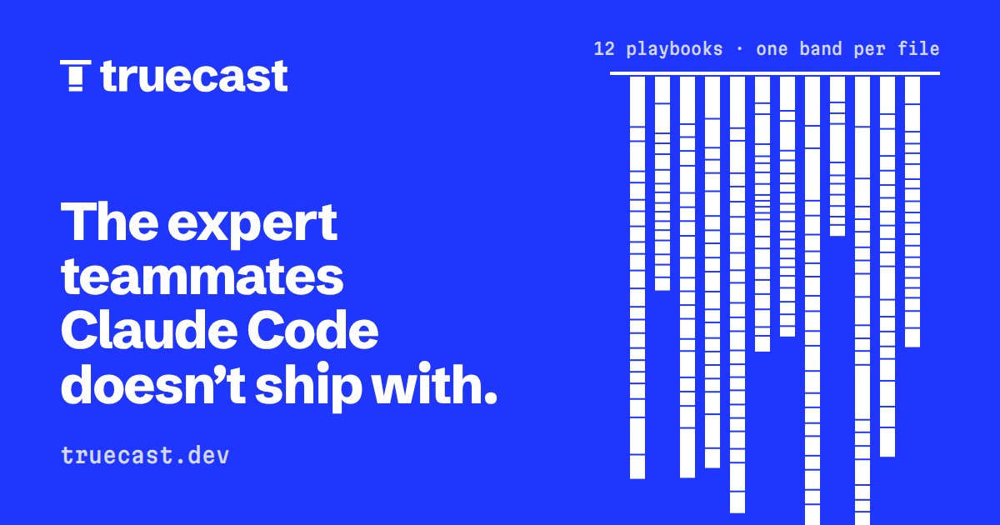
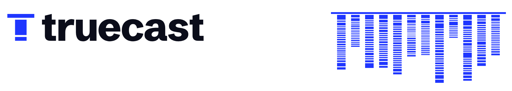

Depth you can see behind every name.
The truecast identity. A teammate is the name you call and the playbook under it, and the brand shows both: the agent file at the surface, the core below, every band a real file.
01 · the mark
A T, cut where the playbook is.
The crossbar is the agent file Claude Code sees, ~/.claude/agents/<name>.md. The stem is the playbook under it in ~/.truecast, cut where skills end and knowledge begins: 8:2 on a 14-unit grid (the favicon re-draws it 5:1 for 16px). Across all 12 playbooks the real split is 81:19.
The wordmark is Schibsted Grotesk ExtraBold, outlined and re-spaced by eye. The mark stands exactly as tall as its t.
favicon 16 · 32 · 64
02 · the core
Every playbook, drawn to one scale.
The signature device. Each teammate hangs from a surface line; each band is one real file in its core/, as tall as its word count. It's generated from the repo, so it can't lie, and it changes when a playbook does.
Comparisons only at one scale. Never decorative, never invented, never cropped inside a layout (it may run off a frame's edge).
teammate · files · words
- software-architect22 · 13,025
- software-engineer16 · 6,697
- qa20 · 13,107
- security-engineer21 · 12,697
- infrastructure24 · 14,121
- product-manager21 · 8,570
- product-researcher21 · 8,035
- ui-ux-designer24 · 17,215
- brand-designer11 · 5,060
- product-marketer23 · 16,771
- sales20 · 12,361
- vc-seed20 · 8,470
03 · the core, as proof
76 words against 12,697.
The same device puts the reader's alternative next to ours: the 76-word hand-written agent from the proof run beside security-engineer's 21 files, same scale.
1 file · 76 words
21 files · 12,697 words
04 · colour
True blue, and nothing warm.
True blue means genuine, and in this category it's unclaimed. The platform's own identity is warm cream and terracotta; we stay cool so nobody mistakes a third-party tool for a first-party one. The only other colours are verdicts, and only on real verdicts.
verdicts
actions
Copy the install command claude plugin install truecast --marketplace wastedcode/truecast05 · type
A newsroom grotesk and a sturdy mono.
Schibsted Grotesk comes from a media group's print heritage: it reports, it doesn't pitch. Martian Mono carries everything you'd type or read in a terminal. Both are OFL and self-hosted.
display · 800 · −0.035em
h2 · 800 · −0.025em
body · 400 · 17/1.55
One file in your repo, .truecast/agents/security-engineer/instance/mandate.md: what the project is, what matters, where the bar is. It reads it first. Updates never touch it.
mono · Martian 87.5 width
plan: install security-engineer@1.2.2 agent ~/.claude/agents/security-engineer.md nothing has been written yet.
06 · touchpoints
One idea everywhere it's met.
Social card (1200×630) and the README header for GitHub light and dark. All of them are generated by scripts/brand/build.py.

README header
